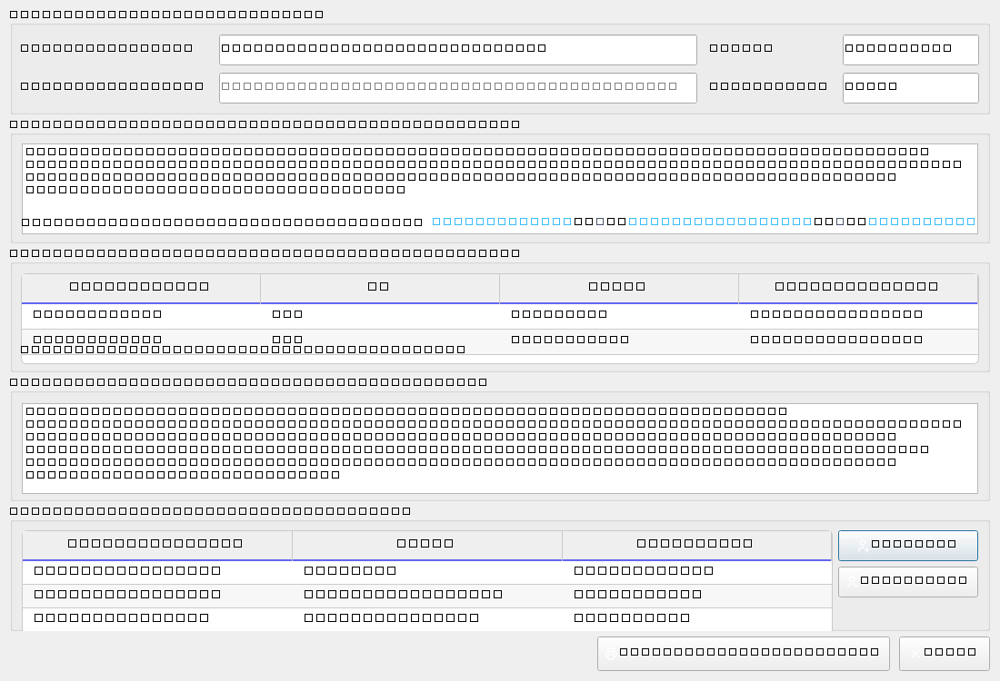
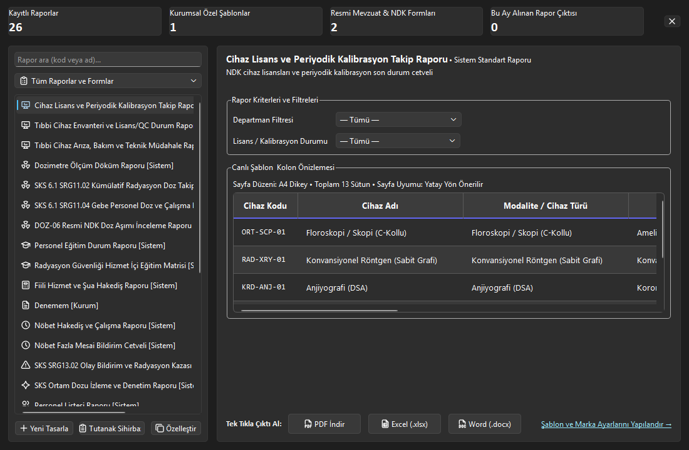

23. Raporlama ve Tutanak Yönetim Merkezi
Çoklu koruyucu ekipman ve cihazlar için tek resmi tutanakta heyet kararı oluşturun; iki aşamalı yasal tasfiye döngüsüyle EBYS kapatması yapıp SHA-256 ile mühürleyin. Kurumsal 26 resmi mevzuat raporunu Word, Excel ve akıllı yönlendirmeli PDF formatında tek tıkla üretin.
Vizyonder Hızlı Karar Reçetesi & Önemli Metrikler
5N1K Kural ve Ayar Çözümleme Tablosu
RAPOR-TUTANAK-RULE-MATRIX| NE (İşlem / Alan) | NEDEN (Gerekçe) | NEREDE (Arayüz Yolu) | NASIL (Yöntem) | NE ZAMAN (Zamanlama) | KİM (Rol / Yetki) | DURUM (Sistem Tepkisi) |
|---|---|---|---|---|---|---|
| Resmi Rapor Üretimi | SKS 6.1 ve NDK denetimleri veya kurum içi analizler için resmi belge almak | Rapor Merkezi → Raporlar Sekmesi | Rapor Seç → Filtrele → "Rapor Oluştur ve Aç" | Periyodik denetim veya yönetim taleplerinde | Raporlar Okuma Yetkilisi | Word, Excel veya PDF formatında diskte üretilir ve sistemde açılır |
| Şablon ve Marka Ayarı | Kurum başlıklarını ve resmi çift logoyu antetli belgelere giydirmek | Rapor Merkezi → Şablon Ayarları | Logo Seç → Başlık Gir → Antetli Şablonu Güncelle | Kurum logosu veya başlığı değiştiğinde | Sistem Yöneticisi / Admin | Tüm kurumsal antetli raporlara otomatik yansır |
| Tutanak ve Heyet Kararı Oluşturma | Çoklu kayıt (örn: 20 RKE veya cihaz) için tek bir resmi evrakta gerekçe, döküm tablosu, karar ve imza heyeti oluşturmak | Sol Menü → [Tutanak Sihirbazı] VEYA Modül Araç Çubuğu → [HEK Tutanağı] / [Tutanak Oluştur] | Kayıtları Seç → Sihirbazı Aç → Giriş/Sonuç Metinlerini Düzenle → [Tutanak Oluştur / Yazdır] (Resmi PDF) | HEK, devir, imha veya komisyon kararı alınacağı an | Komisyon Başkanı / Birim Yetkilisi | Tek resmi kilitli PDF üretilir; keyfi değişiklikleri önlemek için Word çıktısı tamamen kaldırılmıştır |
| İki Aşamalı HEK & Kalıcı Mühürleme | Heyet ıslak imzası ve resmi Ayniyat EBYS yazısı olmadan kayıtların erken kayıttan düşmesini engellemek | Cihaz / RKE Yönetimi → [HEK Tutanağı] ve HEK Yönetimi → [EBYS ile Kapat] | 1. Aşamada Heyet Ön İnceleme Tutanağı üretilir; 2. Aşamada imzalı taranmış üst yazı eklenip SHA-256 ile mühürlenir | Ekipman heyete sevk edildiğinde ve Ayniyat devri bittiğinde | Muayene Heyeti / Birim Amiri / Taşınır Yetkilisi | Ekipmanlar önce 'Heyet İmzasında' kalır; kapatılınca birleşik mühürlü PDF oluşur ve kalıcı kilitlenir |
| Şablon Tasarım ve Klonlama Stüdyosu | Kurumun kendine özgü rapor, çizelge veya tutanak formatlarını sıfırdan tasarlamak veya mevcutları uyarlamak | Rapor Merkezi → [Yeni Tasarla] VEYA [Özelleştir] | Veri Kaynağı Seç → Kolonları ve Başlıkları Belirle → Sayfa Yönü / Format Ata → Kaydet | Yeni bir resmi form veya denetim şablonu gerektiğinde | Sistem Yöneticisi / Admin | Şablon kataloğuna anında eklenir; ilgili modül dışa aktar menülerinde canlı görünür |
| Tıklanabilir Değişken Butonları | Tutanak metinlerine tarih, kurum adı, departman veya kayıt sayısını tek tıkla hatasız eklemek | Tutanak Sihirbazı / Şablon Tasarım → Metin Kutuları Altındaki [+ {{ ... }}] Butonları | Metin kutusunda imleci yerleştir → İlgili değişken butonuna tıkla | Tutanak gerekçesi veya karar metni yazılırken | Tüm Kullanıcılar | İmlecin bulunduğu yere etiket eklenir; tutanak çıktısında gerçek değerlerle çözümlenir |
| Akıllı Kriter Çerçevesi Yönetimi | Parametresi veya filtre kriteri bulunmayan raporlarda ekranda içi boş bir kutu kalmasını önlemek | Rapor Merkezi Kokpiti → [Rapor Kriterleri ve Filtreleri] Kutusu | Sistem tarafından otomatik yönetilir (Kriter varsa açılır, yoksa gizlenir) | Listeden bir rapor veya tutanak seçildiği an | Sistem Otomasyonu | Gereksiz boş kutu ekrandan kaybolur; tablo ve butonlar ferah bir şekilde yukarı kayar |
| Çoklu Sütun Sayfa Yönlendirme Adaptasyonu | Çok sütunlu geniş tablolarda metinlerin sıkışmasını veya sayfa kenarından taşmasını önlemek | PDF Çıktı Motoru (Otomatik Sistem Kuralı) | Sütun sayısı ≤ 6 ise Dikey A4, > 6 ise otomatik Yatay A4 olarak dökülür | Herhangi bir tablonun veya raporun PDF dökümü alındığında | Sistem Otomasyonu | Geniş tablolarda yatay yönlendirme sayesinde tüm sütunlar kusursuz okunur |
Mit Avcısı: Rapor ve Tutanaklarda Yanlış Bilinen Doğrular
RAPOR-MYTH-BUSTER"Tutanak Sihirbazı'nda oluşturduğum resmi tutanağı Word (.docx) olarak indirip üzerinde istediğim değişiklikleri yapabilirim."
Tutanaklar hukuki bağlayıcılığı olan heyet kararlarıdır. Keyfi tahrifat ve yetkisiz değişiklikleri önlemek amacıyla Word indirme seçeneği sistemden tamamen silinmiş olup tek resmi standart kilitli PDF çıktısıdır.
"HEK tutanağı aldığım an ekipmanlar doğrudan envanterden silinir ve hurdaya ayrılmış olur."
İki Aşamalı Yasal Tasfiye Kuralı gereğince ilk aşamada ekipmanlar silinmez, "Heyet İmzasında" durumuna alınır. Heyetin ıslak imzalı tutanağı ve Taşınır/EBYS resmi yazısı taranıp yüklenmeden hiçbir ekipman kayıttan düşülmez.
"Kurum ayarlarında çift logo tanımlı değilse Word ve PDF raporları hata verip kilitlenir."
Rapor motoru kurumda tek logo yüklüyse sadece mevcut logoyu basar; hiç logo tanımlanmamışsa şablon logoları atlayarak dürüst kurumsal varsayılan olan RADPYS antetini kullanır ve hatasız döküm üretir.
"Resmi antetli Word ve PDF raporlarını Web Portal üzerinden de oluşturabilirim."
Antetli matbu Word (.docx), PDF ve Excel rapor merkezi yalnızca Masaüstü İstemcisi üzerinde çalışır. Web portalda ise personelin bireysel başvuru ekranları ve etkileşimli canlı analiz panoları yer alır.
Raporlama ve Tutanak Yaşam Döngüsü Süreç Akışı
RAPOR-TUTANAK-WORKFLOW(RKE veya Cihaz Tablosu)"]:::desktop --> B["Tutanak Sihirbazı
(Otomatik Akıllı Heyet Atama)"]:::desktop B --> C["Gerekçe & Karar Metinleri
(Dinamik Değişken Butonları)"]:::desktop C --> D["1. Aşama: Heyet Ön İnceleme Tutanağı
(Tek Resmi Antetli PDF Üretimi)"]:::hek D --> E["Kayıtların Kilitlenmesi
('Heyet İmzasında' Durumu)"]:::hek E --> F["Komisyon Islak / E-İmza Süreci
& Taşınır / Ayniyat Sevk Yazısı"]:::hek F --> G["2. Aşama: EBYS Kapatma Formu
(Taranmış İmzalı Üst Yazı Ekleme)"]:::hek G --> H["SHA-256 Dijital Mührü
& Birleşik Nihai Tasfiye PDF'i"]:::vault H --> I["Kayıtların Kalıcı Arşivlenmesi
& Evrak Kasasına Bağlantı"]:::vault J["Rapor Merkezi Kokpiti
(26 Resmi Mevzuat Raporu)"]:::desktop --> K["Dinamik Filtre Formu
(Departman, Dönem, Tarih)"]:::desktop K --> L{"Çıktı Formatı Seçimi"}:::decision L -- "PDF" --> M["Akıllı Sayfa Yönlendirme
(6 ve Altı Sütun: Dikey / 7 ve Üstü: Yatay)"]:::desktop L -- "Excel" --> N["Veri Cetveli (.xlsx)
(Filtrelenebilir Tablo)"]:::desktop L -- "Word" --> O["Antetli Resmi Yazı (.docx)
(docxtpl Şablon Motoru)"]:::desktop
Kurumsal Rapor Merkezi: Resmi Mevzuat Kataloğu & Üretim Motoru
REPORT-CATALOG-SSOTRapor Merkezi, sistem genelindeki tüm klinik, dozimetre, nöbet, personel ve kalite verilerini Sağlık Bakanlığı SKS 6.1 ve NDK standartlarında resmi antetli dökümlere dönüştürür.
- • SKS SRG11.02 Kümülatif Doz Raporu: Yıllık doz sınırları, %80 eşik yaklaşım uyarıları ve denetim dökümü.
- • SKS SRG11.04 Gebe Personel Doz Raporu: Hamilelik süresince kümülatif doz ve çalışma alanı uyum cetveli.
- • DOZ-06 Resmi NDK Doz Aşımı Formu: İnceleme düzeyini aşan vakalarda NDK'ya sunulan resmi araştırma raporu.
- • Periyodik Sağlık Muayenesi Uyum Raporu: 6331 sayılı İSG Kanunu'na göre geciken ve yaklaşan muayeneler.
- • Fiili Hizmet ve Şua Hakediş Raporu (FHZ): SGK yıpranma payı ve radyasyonlu alanda net çalışma cetveli.
- • Nöbet Fazla Mesai Bildirim Cetveli: Mutemetlik birimine iletilen resmi normal ve bayram fazla mesai icmali.
- • Personel İzin Bakiye Cetveli: Yıllık izin, şua izni ve mazeret izinlerinin güncel devir ve hakediş özeti.
- • Nöbet Hakediş ve Çalışma Raporu: Gece/hafta sonu çarpanları ile nöbet saatleri icmali.
- • Cihaz Lisans & Kalibrasyon Raporu: NDK lisans bitiş süreleri ve periyodik kalite kontrol (QC) durumları.
- • SKS SRG12.01 RKE Muayene Çizelgesi: Kurşun önlük, tiroid ve gözlüklerin DIN 6857 skopi muayene sonuçları.
- • SKS Ortam Dozu İzleme Raporu: Denetimli/gözetimli alan radyasyon arka plan ölçümleri ve sınır aşımları.
- • SKS SRG13.02 Olay Bildirim Trend Analizi: İstenmeyen güvenlik olayları, kazalar ve DÖF takibi.
- • Personel Listesi & Künye Raporu: Departman, unvan ve hizmet sınıfına göre filtrelenmiş aktif personel dökümü.
- • Eğitim & Sınav Tamamlama Raporu: Zorunlu radyasyon güvenliği eğitim ve online sınav başarı tablosu.
- • Personel Kimlik ve Acil İletişim Rehberi: Kurum içi iletişim ve acil durum irtibat listesi.
- • Fiziksel Konum Dağılım Raporu: Bina, kat ve oda bazında kurulu cihaz ve personel yerleşimi.
Çıktı Formatları ve Kurumsal Şablon Yönetimi
DOCXTPL-BRANDINGResmi yazışmalar ve komisyon kararları için antetli Word belgesi olarak üretilir. Üzerinde kurum içi düzenlemeler yapılabilir.
Sayfa yapısı ve mizanpajı kilitlenmiş, ıslak imza veya EBYS e-imza protokolüne hazır kurumsal denetim dökümüdür.
Mutemetlik, SGK bordrolama ve harici veri analitiği için açık veri tabloları ve filtrelenebilir sütunlar içerir.
Şablon Tasarım ve Marka Ayarları:
Rapor Merkezi'nin Şablon Ayarları sekmesi ve Şablon Tasarım pencereleri üzerinden kurum kimliği kolayca yönetilir:
* Sıfır Sentetik Kurum Standardı: Sistem ayarlarında henüz bir kurum adı tanımlanmamışsa şablonlarda veya PDF dökümlerinde asla sahte kamu/özel kurum adı yazılmaz; dürüst kurumsal varsayılan olarak RADPYS anteti otomatik çözümlenir.
Evrensel Tutanak ve Komisyon Karar Sihirbazı & Şablon Tasarım Stüdyosu
V4.1-TUTANAK-STUDIORADPYS v4.2 ile birlikte sistemde yalnızca klasik satır-sütun tabloları değil; resmi metin içerikli tutanaklar (HEK/Hurda Tutanağı, Devir-Teslim Tutanağı, Zimmet Tutanağı, Komisyon Kararı vb.) oluşturabilme altyapısı devreye alınmıştır. Örneğin 20 adet radyasyon koruyucu ekipman (kurşun önlük, tiroid koruyucu vb.) veya tıbbi cihaz için tek tek 20 sayfa evrak basıp kağıt ve zaman israfı yapmak yerine; Giriş Paragrafı (Toplanma Gerekçesi) + Döküm Tablosu (20 Kayıt) + Sonuç / Karar Paragrafı + Komisyon İmza Heyeti yapısı tek bir resmi belgede kilitli ve değiştirilemez tek resmi PDF standardında üretilir. Resmi heyet kararlarında sonradan tahrifat veya keyfi metin değişikliğini önlemek amacıyla Word çıktısı tamamen kaldırılmıştır.
Tutanak Sihirbazı Ekran Yapısı & Tek Resmi PDF
- • Antet ve Üst Bilgiler: Tutanak Başlığı, Tarih, Düzenleyen Personel ve Belge Karar Numarası.
- • Giriş / Gerekçe Metni: Komisyonun toplanma gerekçesi ve yasal dayanak paragrafı (kullanıcı tarafından serbestçe düzenlenebilir).
- • Çoklu Döküm Tablosu: Seçili 20 adet ekipman veya cihazın kod, seri no, cins, marka, model ve klinik durum bilgileri.
- • Sonuç ve Karar Metni: Fiziksel muayene, skopi sızıntı testi ve teknik ekspertiz neticesinde alınan nihai karar.
- • Dinamik Komisyon Heyeti: [Üye Ekle] ve [Üye Sil] butonlarıyla heyetteki hekim, fizikçi ve tekniker üyelerin unvan ve görev blokları yapılandırılır.
- • [Tutanak Oluştur / Yazdır]: Doğrudan resmi çift logolu, antetli ve imza çizgili kilitli PDF üretir; işlem HEK ise süreci otomatik başlatır.
Tıklanabilir Değişkenler & Akıllı İmleç Konumlandırma
Hem Tutanak Sihirbazı'nda hem de Şablon Tasarım Stüdyosu'nda sol panelde listelenen dinamik alanlar tıklanabilir bağlantı olarak sunulur. Bir alana tıklandığında imlecin şablon metninde durduğu tam konuma çift süslü parantezli {{ degisken_adi }} kodu anında eklenir; mükerrer modül ön ekleri otomatik temizlenir:
* Otomatik Akıllı Heyet Atama: Sistemdeki aktif unvan hiyerarşisine göre (Hekim -> Fizikçi -> Sorumlu Tekniker) heyet üyeleri otomatik olarak Komisyon Başkanı, RKS ve Raportör olarak dizilir; kullanıcı gerekirse kolayca üye ekleyip silebilir.
Tutanak Sihirbazı'nda ekipmanlar seçilip PDF alındığında işlem sıradan bir döküm olarak kalmaz; arka planda otomatik olarak HEK-YYYY-XXXX süreç dosyası açılır. Üretilen PDF'te sarı HEYET İMZASINDA & ÖN İNCELEME DOSYASI rozeti yer alır ve ekipmanlar koruma amaçlı kilitlenir. Bu aşamada henüz hiçbir ekipman kayıttan düşülmez.
Heyet üyeleri tutanağı ıslak imzaladıktan ve Taşınır/Ayniyat biriminden resmi EBYS üst yazısı alındıktan sonra, HEK yönetiminden [EBYS ile Kapat] butonuna tıklanır. İmzalı evrak taranıp sisteme yüklenir; sistem tüm muayene geçmişini, hasar krokilerini ve taranmış ekleri tek bir birleşik PDF'te dondurarak SHA-256 dijital mührüyle süreci kalıcı olarak tamamlar.
Akıllı Filtre Gizleme: Rapor Merkezi'nde seçilen raporun filtre/kriter parametresi bulunmuyorsa veya tutanak şablonu seçildiyse [Rapor Kriterleri ve Filtreleri] kutusu otomatik olarak gizlenir; gereksiz boşluklar ortadan kalkarak canlı önizleme doğrudan öne çıkar.
Arayüz Rehberi & Ekran Görünümleri
UI-SCREENSHOTS

Sıkça Sorulan Sorular (SSS)
FAQ-SUPPORT1. 20 adet koruyucu ekipmanı tek bir resmi HEK tutanağında nasıl toplayabilirim? ▼
RKE Yönetimi ekranında klavyeden Ctrl veya Shift tuşuna basılı tutarak tablodaki 20 ekipmanı seçin ve üst araç çubuğundaki [HEK Tutanağı] butonuna tıklayın. Açılan sihirbazda 20 ekipman doğrudan döküm tablosuna yerleştirilir; giriş ve karar gerekçelerini düzenleyip tek tıkla resmi, antetli ve imza çizgili tek PDF belgesi alabilirsiniz.
2. Tutanak Sihirbazı'nda neden Word (.docx) indirme seçeneği bulunmuyor? ▼
Tutanaklar; komisyon üyelerinin ıslak/e-imzasıyla resmiyet kazanan hukuki vesikalardır. Word gibi üzerinde sonradan tahrifat veya yetkisiz değişiklik yapılabilen formatlar denetim güvenliğini ihlal eder. Bu sebeple Tutanak Sihirbazı'nda tek yasal çıktı standardı olarak değiştirilemez kilitli PDF dökümü uygulanmaktadır.
3. HEK tutanağı oluşturulan bir cihaz veya RKE neden doğrudan envanterden silinmez? ▼
İki Aşamalı Yasal Tasfiye Kuralı gereğince: Tutanak ilk alındığında (1. Aşama) ekipmanlar "Heyet İmzasında" durumuna alınarak kilitlenir. Heyetin ıslak imzalı tutanağı ve Taşınır/EBYS resmi yazısı sisteme taranıp yüklenmeden (2. Aşama) hiçbir ekipman kayıttan düşülmez. EBYS kapatması yapıldığında ise SHA-256 dijital mührüyle tüm süreç kalıcı olarak dondurulur.
4. Tutanak metinlerindeki değişken etiketleri (+ {{ tarih }}, + {{ kurum_adi }}) nasıl çalışır? ▼
Metin kutusunda imlecinizi eklemek istediğiniz yere getirin ve alttaki ilgili değişkene tıklayın. Sistem imlecin tam bulunduğu yere etiketi ekler. Belge üretilirken bu etiketler sistemdeki güncel kurum adı, o günün tarihi veya seçili toplam ekipman sayısı ile otomatik olarak doldurulur.
5. Heyet üyeleri nasıl belirlenir ve komisyona yeni üye nasıl eklenir? ▼
Sistem unvan önceliğine göre aktif hekim, medikal fizikçi ve sorumlu teknisyeni otomatik olarak Komisyon Başkanı, RKS ve Raportör olarak atar. Farklı bir personel eklemek için [Üye Ekle] butonuna basarak personel seçimi yapabilir; komisyondan çıkarmak istediğiniz satırı seçip [Üye Sil] ile silebilirsiniz.
6. Üretilen rapor ve tutanak dosyaları bilgisayarda nerede saklanır? ▼
Üretilen tüm resmi dökümler çalışma dizinindeki güvenli rapor klasörüne benzersiz bir dosya adı ile kaydedilir ve işlem bittiğinde sistemin varsayılan PDF, Word veya Excel görüntüleyicisi ile otomatik açılır. Ayrıca HEK dosyaları sistem evrak kasasında kalıcı olarak arşivlenir.
7. Çok sütunlu tablolarda PDF çıktısı dikey mi yoksa yatay mı dökülür? ▼
Sistem otomatik sayfa adaptasyonuna sahiptir: Tablodaki sütun sayısı 6 ve daha az ise Dikey A4 (Portrait); 6'dan fazla sütun varsa sütunların sıkışmasını ve taşmasını önlemek amacıyla otomatik olarak Yatay A4 (Landscape) formatında çıktı üretilir.
8. Rapor kriterleri ve filtreleri kutusu neden bazı raporlarda görünmüyor? ▼
Seçilen rapor veya tutanak herhangi bir filtreleme parametresi (örneğin sadece genel kurum dökümü) gerektirmiyorsa, arayüzde gereksiz boş kutu oluşmasını önlemek amacıyla [Rapor Kriterleri ve Filtreleri] çerçevesi otomatik gizlenir ve butonlar ferah bir biçimde öne çıkarılır.